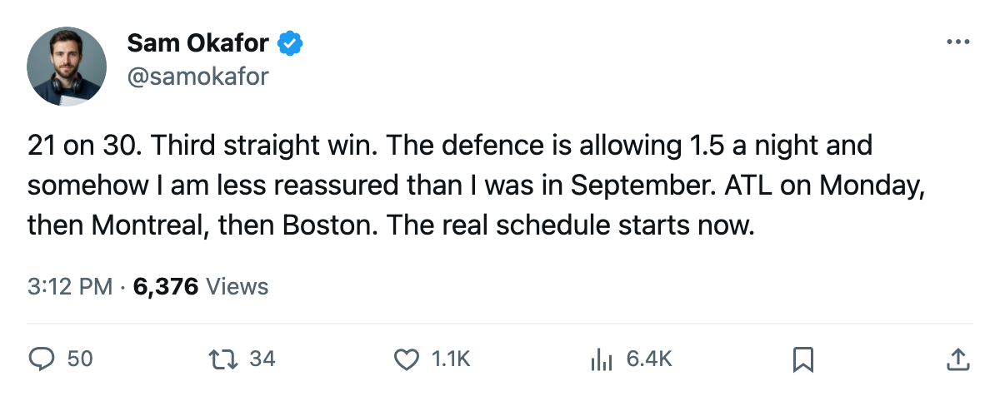

LEAFS 3, ANA 1: 21 shots, 30 against, and 3 straight wins on borrowed pucks
The possession numbers keep pointing one way and the scoreboard keeps pointing the other. Toronto has not outshot an opponent since 10/21.
 Sam OkaforLeafs beat reporter · Queen City Telegram
Sam OkaforLeafs beat reporter · Queen City TelegramThe  Toronto Maple Leafs beat
Toronto Maple Leafs beat  Mighty Ducks of Anaheim 3-1 on Thursday night at the Air Canada Centre, extending the win streak to 3 and the home mark to 5-2. The scoreboard said what the scoreboard said. The shot clock told a different story.
Mighty Ducks of Anaheim 3-1 on Thursday night at the Air Canada Centre, extending the win streak to 3 and the home mark to 5-2. The scoreboard said what the scoreboard said. The shot clock told a different story.
Toronto fired 21 pucks on goal. Mighty Ducks of Anaheim fired 30. The Ducks came into the night on a 3-game losing streak, 2-4-1, dead last in the Pacific, and they held the shot differential by 9. The Toronto Maple Leafs defence has allowed 15 goals in 10 games, the lowest total in the league, and the shot data suggests that number is being held down by goaltending and luck rather than by territory.
The pattern isn't new: Toronto was outshot 24-22 by  New York Rangers on 10/26 and 25-29 by
New York Rangers on 10/26 and 25-29 by  Florida Panthers on 10/23. In both cases the Leafs won. The last time Toronto held the shot advantage was 10/21 against
Florida Panthers on 10/23. In both cases the Leafs won. The last time Toronto held the shot advantage was 10/21 against  Boston Bruins, and Boston won that one 3-2.
Boston Bruins, and Boston won that one 3-2.
 Mats Sundin92 and Petr Chlup87 each carry 9 points through 10 games. Chlup, 19, skates 20.2 minutes a night on the second line and the fourth power-play unit, and his 5 goals lead the team.
Mats Sundin92 and Petr Chlup87 each carry 9 points through 10 games. Chlup, 19, skates 20.2 minutes a night on the second line and the fourth power-play unit, and his 5 goals lead the team.  Barret Jackman86 has 10 points from the blueline (3 goals, 7 assists) and logs 26.1 minutes a night, the highest total among Toronto forwards and defencemen alike.
Barret Jackman86 has 10 points from the blueline (3 goals, 7 assists) and logs 26.1 minutes a night, the highest total among Toronto forwards and defencemen alike.
The next test comes Monday against  Atlanta Thrashers, who enter 2-5-1 on a 3-game losing streak and 0-5 on the road. Then
Atlanta Thrashers, who enter 2-5-1 on a 3-game losing streak and 0-5 on the road. Then  Montreal Canadiens visits Wednesday, and Boston Bruins follows on 11/2 in a game that will read, on paper, like a division final if the standings hold their current shape.
Montreal Canadiens visits Wednesday, and Boston Bruins follows on 11/2 in a game that will read, on paper, like a division final if the standings hold their current shape.
The Toronto Maple Leafs season series against Boston Bruins reads 0-1-0. Toronto leads the division by 3 points. Boston has played 2 fewer games.
